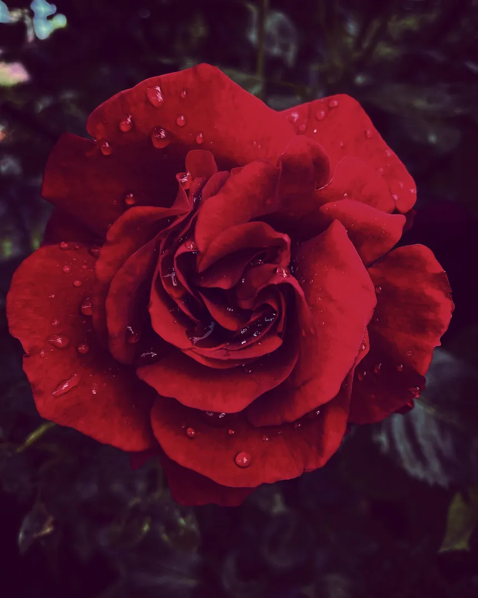
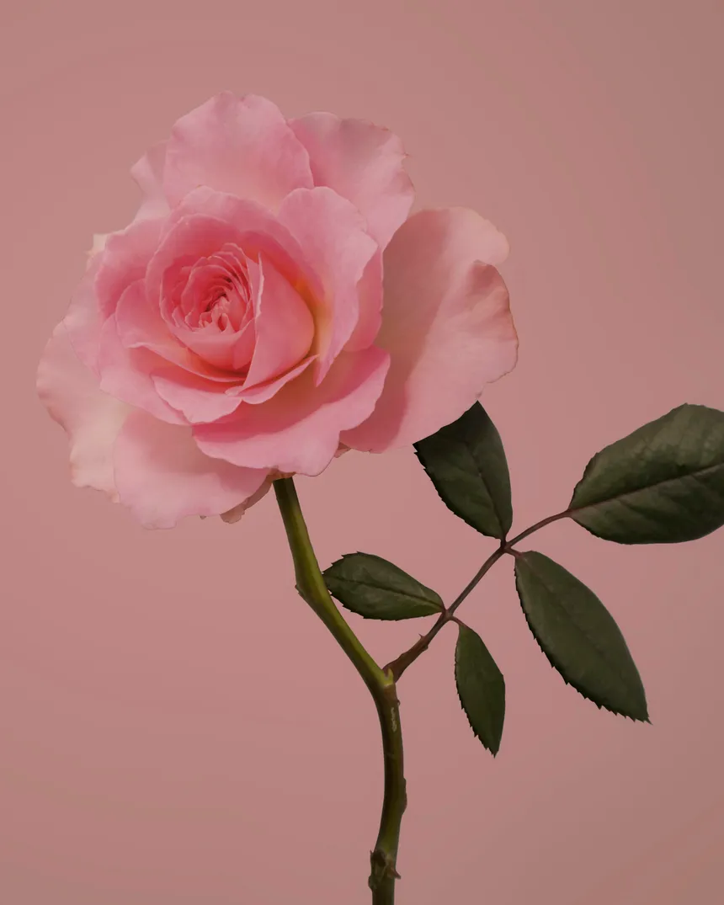
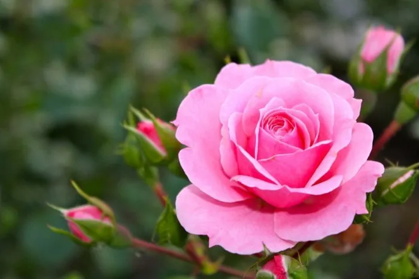

La rose est l'une des fleurs les plus emblématiques et appréciées au monde , souvent associée à l'amour et à la beauté . Originaire d'Asie , elle se décline en une multitude de variétés et de couleurs , chacune possédant sa propre signification symbolique . Les roses rouges , par exemple , sont synonymes de passion et de romance , tandis que les roses blanches évoquent la pureté et l'innocence . En plus de leur apparence délicate et de leur parfum envoûtant , les roses jouent un rôle important en horticulture et en parfumerie . Leur culture demande une attention particulière , notamment en ce qui concerne la taille , l'arrosage et la protection contre les maladies , mais la splendeur qu'elles apportent aux jardins et aux bouquets en vaut largement la peine .
   voir plus d'informations